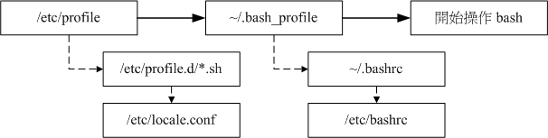

10.4 Bash Shell 的操作环境：
是否记得我们登陆主机的时候，屏幕上头会有一些说明文字，告知我们的 Linux 版本啊什么的， 还有，登陆的时候我们还可以给予使用者一些讯息或者欢迎文字呢。此外， 我们习惯的环境变量、命令别名等等的，是否可以登陆就主动的帮我设置好？ 这些都是需要注意的。另外，这些设置值又可以分为系统整体设置值与各人喜好设置值， 仅是一些文件放置的地点不同啦！这我们后面也会来谈一谈的！
10.4.1 路径与指令搜寻顺序
我们在第五章与第六章都曾谈过“相对路径与绝对路径”的关系， 在本章的前几小节也谈到了 alias 与 bash 的内置命令。现在我们知道系统里面其实有不少的 ls 指令， 或者是包括内置的 echo 指令，那么来想一想，如果一个指令 （例如 ls） 被下达时， 到底是哪一个 ls 被拿来运行？很有趣吧！基本上，指令运行的顺序可以这样看：
- 以相对/绝对路径执行指令，例如“ /bin/ls ”或“ ./ls ”；
- 由 alias 找到该指令来执行；
- 由 bash 内置的 （builtin） 指令来执行；
- 通过 $PATH 这个变量的顺序搜寻到的第一个指令来执行。
举例来说，你可以下达 /bin/ls 及单纯的 ls 看看，会发现使用 ls 有颜色但是 /bin/ls 则没有颜色。 因为 /bin/ls 是直接取用该指令来下达，而 ls 会因为“ alias ls='ls --color=auto' ”这个命令别名而先使用！ 如果想要了解指令搜寻的顺序，其实通过 type -a ls 也可以查询的到啦！上述的顺序最好先了解喔！
例题：设置 echo 的命令别名成为 echo -n ，然后再观察 echo 执行的顺序答：
[dmtsai@study ~]$ alias echo='echo -n'
[dmtsai@study ~]$ type -a echo
echo is aliased to `echo -n'
echo is a shell builtin
echo is /usr/bin/echo
瞧！很清楚吧！先 alias 再 builtin 再由 $PATH 找到 /bin/echo 啰！
10.4.2 bash 的进站与欢迎讯息： /etc/issue, /etc/motd
虾密！ bash 也有进站画面与欢迎讯息喔？真假？真的啊！ 还记得在终端机接口 （tty1 ~ tty6） 登陆的时候，会有几行提示的字串吗？那就是进站画面啊！ 那个字串写在哪里啊？呵呵！在 /etc/issue 里面啊！先来看看：
[dmtsai@study ~]$ cat /etc/issue
\S
Kernel \r on an \m
鸟哥是以完全未更新过的 CentOS 7.1 作为范例，里面默认有三行，较有趣的地方在于 \r 与 \m。 就如同 $PS1 这变量一样，issue 这个文件的内容也是可以使用反斜线作为变量取用喔！你可以 man issue 配合 man agetty 得到下面的结果：
| issue 内的各代码意义 |
|---|
| \d 本地端时间的日期； |
| \l 显示第几个终端机接口； |
| \m 显示硬件的等级 （i386/i486/i586/i686...）； |
| \n 显示主机的网络名称； |
| \O 显示 domain name； |
| \r 操作系统的版本 （相当于 uname -r） |
| \t 显示本地端时间的时间； |
| \S 操作系统的名称； |
| \v 操作系统的版本。 |
做一下下面这个练习，看看能不能取得你要的进站画面？
例题：如果你在 tty3 的进站画面看到如下显示，该如何设置才能得到如下画面？
> CentOS Linux 7 （Core） （terminal: tty3） > Date: 2015-07-08 17:29:19 > Kernel 3.10.0-229.el7.x86_64 on an x86_64 > Welcome!
注意，tty3 在不同的 tty 有不同显示，日期则是再按下 [enter] 后就会所有不同。答：很简单，用 root 的身份，并参考上述的反斜线功能去修改 /etc/issue 成为如下模样即可（共五行）：
\S （terminal: \l）
Date: \d \t
Kernel \r on an \m
Welcome!
曾有鸟哥的学生在这个 /etc/issue 内修改数据，光是利用简单的英文字母作出属于他自己的进站画面， 画面里面有他的中文名字呢！非常厉害！也有学生做成类似很大一个“囧”在进站画面，都非常有趣！
你要注意的是，除了 /etc/issue 之外还有个 /etc/issue.net 呢！这是啥？这个是提供给 telnet 这个远端登陆程序用的。 当我们使用 telnet 连接到主机时，主机的登陆画面就会显示 /etc/issue.net 而不是 /etc/issue 呢！
至于如果您想要让使用者登陆后取得一些讯息，例如您想要让大家都知道的讯息， 那么可以将讯息加入 /etc/motd 里面去！例如：当登陆后，告诉登陆者， 系统将会在某个固定时间进行维护工作，可以这样做 （一定要用 root 的身份才能修改喔！）：
[root@study ~]# vim /etc/motd
Hello everyone,
Our server will be maintained at 2015/07/10 0:00 ~ 24:00.
Please don't login server at that time. ^_^
那么当你的使用者（包括所有的一般帐号与 root）登陆主机后，就会显示这样的讯息出来：
Last login: Wed Jul 8 23:22:25 2015 from 127.0.0.1
Hello everyone,
Our server will be maintained at 2015/07/10 0:00 ~ 24:00.
Please don't login server at that time. ^_^
10.4.3 bash 的环境配置文件
你是否会觉得奇怪，怎么我们什么动作都没有进行，但是一进入 bash 就取得一堆有用的变量了？ 这是因为系统有一些环境设置文件的存在，让 bash 在启动时直接读取这些配置文件，以规划好 bash 的操作环境啦！ 而这些配置文件又可以分为全体系统的配置文件以及使用者个人偏好配置文件。要注意的是， 我们前几个小节谈到的命令别名啦、自订的变量啦，在你登出 bash 后就会失效，所以你想要保留你的设置， 就得要将这些设置写入配置文件才行。下面就让我们来聊聊吧！
- login 与 non-login shell
在开始介绍 bash 的配置文件前，我们一定要先知道的就是 login shell 与 non-login shell！ 重点在于有没有登陆 （login） 啦！
login shell：取得 bash 时需要完整的登陆流程的，就称为 login shell。举例来说，你要由 tty1 ~ tty6 登陆，需要输入使用者的帐号与密码，此时取得的 bash 就称为“ login shell ”啰；
non-login shell：取得 bash 接口的方法不需要重复登陆的举动，举例来说，（1）你以 X window 登陆 Linux 后， 再以 X 的图形化接口启动终端机，此时那个终端接口并没有需要再次的输入帐号与密码，那个 bash 的环境就称为 non-login shell了。（2）你在原本的 bash 环境下再次下达 bash 这个指令，同样的也没有输入帐号密码， 那第二个 bash （子程序） 也是 non-login shell 。
为什么要介绍 login, non-login shell 呢？这是因为这两个取得 bash 的情况中，读取的配置文件数据并不一样所致。 由于我们需要登陆系统，所以先谈谈 login shell 会读取哪些配置文件？一般来说，login shell 其实只会读取这两个配置文件：
- /etc/profile：这是系统整体的设置，你最好不要修改这个文件；
- ~/.bash_profile 或 ~/.bash_login 或 ~/.profile：属于使用者个人设置，你要改自己的数据，就写入这里！
那么，就让我们来聊一聊这两个文件吧！这两个文件的内容可是非常繁复的喔！
- /etc/profile （login shell 才会读）
你可以使用 vim 去阅读一下这个文件的内容。这个配置文件可以利用使用者的识别码 （UID） 来决定很多重要的变量数据， 这也是每个使用者登陆取得 bash 时一定会读取的配置文件！ 所以如果你想要帮所有使用者设置整体环境，那就是改这里啰！不过，没事还是不要随便改这个文件喔 这个文件设置的变量主要有：
- PATH：会依据 UID 决定 PATH 变量要不要含有 sbin 的系统指令目录；
- MAIL：依据帐号设置好使用者的 mailbox 到 /var/spool/mail/帐号名；
- USER：根据使用者的帐号设置此一变量内容；
- HOSTNAME：依据主机的 hostname 指令决定此一变量内容；
- HISTSIZE：历史命令记录笔数。CentOS 7.x 设置为 1000 ；
- umask：包括 root 默认为 022 而一般用户为 002 等！
/etc/profile 可不止会做这些事而已，他还会去调用外部的设置数据喔！在 CentOS 7.x 默认的情况下，下面这些数据会依序的被调用进来：
- /etc/profile.d/*.sh
其实这是个目录内的众多文件！只要在 /etc/profile.d/ 这个目录内且扩展名为 .sh ，另外，使用者能够具有 r 的权限， 那么该文件就会被 /etc/profile 调用进来。在 CentOS 7.x 中，这个目录下面的文件规范了 bash 操作接口的颜色、 语系、ll 与 ls 指令的命令别名、vi 的命令别名、which 的命令别名等等。如果你需要帮所有使用者设置一些共享的命令别名时， 可以在这个目录下面自行创建扩展名为 .sh 的文件，并将所需要的数据写入即可喔！
- /etc/locale.conf
这个文件是由 /etc/profile.d/lang.sh 调用进来的！这也是我们决定 bash 默认使用何种语系的重要配置文件！ 文件里最重要的就是 LANG/LC_ALL 这些个变量的设置啦！我们在前面的 locale 讨论过这个文件啰！ 自行回去瞧瞧先！
- /usr/share/bash-completion/completions/*
记得我们上头谈过 [tab] 的妙用吧？除了命令补齐、文件名补齐之外，还可以进行指令的选项/参数补齐功能！那就是从这个目录里面找到相对应的指令来处理的！ 其实这个目录下面的内容是由 /etc/profile.d/bash_completion.sh 这个文件载入的啦！
反正你只要记得，bash 的 login shell 情况下所读取的整体环境配置文件其实只有 /etc/profile，但是 /etc/profile 还会调用出其他的配置文件，所以让我们的 bash 操作接口变的非常的友善啦！ 接下来，让我们来瞧瞧，那么个人偏好的配置文件又是怎么回事？
- ~/.bash_profile （login shell 才会读）
bash 在读完了整体环境设置的 /etc/profile 并借此调用其他配置文件后，接下来则是会读取使用者的个人配置文件。 在 login shell 的 bash 环境中，所读取的个人偏好配置文件其实主要有三个，依序分别是：
- ~/.bash_profile
- ~/.bash_login
- ~/.profile
其实 bash 的 login shell 设置只会读取上面三个文件的其中一个， 而读取的顺序则是依照上面的顺序。也就是说，如果 ~/.bash_profile 存在，那么其他两个文件不论有无存在，都不会被读取。 如果 ~/.bash_profile 不存在才会去读取 ~/.bash_login，而前两者都不存在才会读取 ~/.profile 的意思。 会有这么多的文件，其实是因应其他 shell 转换过来的使用者的习惯而已。 先让我们来看一下 dmtsai 的 /home/dmtsai/.bash_profile 的内容是怎样呢？
[dmtsai@study ~]$ cat ~/.bash_profile
# .bash_profile
# Get the aliases and functions
if [ -f ~/.bashrc ]; then <==下面这三行在判断并读取 ~/.bashrc
. ~/.bashrc
fi
# User specific environment and startup programs
PATH=$PATH:$HOME/.local/bin:$HOME/bin <==下面这几行在处理个人化设置
export PATH
这个文件内有设置 PATH 这个变量喔！而且还使用了 export 将 PATH 变成环境变量呢！ 由于 PATH 在 /etc/profile 当中已经设置过，所以在这里就以累加的方式增加使用者主文件夹下的 ~/bin/ 为额外的可执行文件放置目录。这也就是说，你可以将自己创建的可执行文件放置到你自己主文件夹下的 ~/bin/ 目录啦！ 那就可以直接执行该可执行文件而不需要使用绝对/相对路径来执行该文件。
这个文件的内容比较有趣的地方在于 if ... then ... 那一段！那一段程序码我们会在第十二章 shell script 谈到，假设你现在是看不懂的。 该段的内容指的是“判断主文件夹下的 ~/.bashrc 存在否，若存在则读入 ~/.bashrc 的设置”。 bash 配置文件的读入方式比较有趣，主要是通过一个指令“ source ”来读取的！ 也就是说 ~/.bash_profile 其实会再调用 ~/.bashrc 的设置内容喔！最后，我们来看看整个 login shell 的读取流程：
图10.4.1、login shell 的配置文件读取流程
实线的的方向是主线流程，虚线的方向则是被调用的配置文件！从上面我们也可以清楚的知道，在 CentOS 的 login shell 环境下，最终被读取的配置文件是“ ~/.bashrc ”这个文件喔！所以，你当然可以将自己的偏好设置写入该文件即可。 下面我们还要讨论一下 source 与 ~/.bashrc 喔！
- source ：读入环境配置文件的指令
由于 /etc/profile 与 ~/.bash_profile 都是在取得 login shell 的时候才会读取的配置文件，所以， 如果你将自己的偏好设置写入上述的文件后，通常都是得登出再登陆后，该设置才会生效。那么，能不能直接读取配置文件而不登出登陆呢？ 可以的！那就得要利用 source 这个指令了！
[dmtsai@study ~]$ source 配置文件文件名
范例：将主文件夹的 ~/.bashrc 的设置读入目前的 bash 环境中
[dmtsai@study ~]$ source ~/.bashrc <==下面这两个指令是一样的！
[dmtsai@study ~]$ . ~/.bashrc
利用 source 或小数点 （.） 都可以将配置文件的内容读进来目前的 shell 环境中！ 举例来说，我修改了 ~/.bashrc ，那么不需要登出，立即以 source ~/.bashrc 就可以将刚刚最新设置的内容读进来目前的环境中！很不错吧！还有，包括 ~/bash_profile 以及 /etc/profile 的设置中， 很多时候也都是利用到这个 source （或小数点） 的功能喔！
有没有可能会使用到不同环境配置文件的时候？有啊！ 最常发生在一个人的工作环境分为多种情况的时候了！举个例子来说，在鸟哥的大型主机中， 常常需要负责两到三个不同的案子，每个案子所需要处理的环境变量订定并不相同， 那么鸟哥就将这两三个案子分别编写属于该案子的环境变量设置文件，当需要该环境时，就直接“ source 变量文件 ”，如此一来，环境变量的设置就变的更简便而灵活了！
- ~/.bashrc （non-login shell 会读）
谈完了 login shell 后，那么 non-login shell 这种非登陆情况取得 bash 操作接口的环境配置文件又是什么？ 当你取得 non-login shell 时，该 bash 配置文件仅会读取 ~/.bashrc 而已啦！那么默认的 ~/.bashrc 内容是如何？
[root@study ~]# cat ~/.bashrc
# .bashrc
# User specific aliases and functions
alias rm='rm -i' <==使用者的个人设置
alias cp='cp -i'
alias mv='mv -i'
# Source global definitions
if [ -f /etc/bashrc ]; then <==整体的环境设置
. /etc/bashrc
fi
特别注意一下，由于 root 的身份与一般使用者不同，鸟哥是以 root 的身份取得上述的数据， 如果是一般使用者的 ~/.bashrc 会有些许不同。看一下，你会发现在 root 的 ~/.bashrc 中其实已经规范了较为保险的命令别名了。 此外，咱们的 CentOS 7.x 还会主动的调用 /etc/bashrc 这个文件喔！为什么需要调用 /etc/bashrc 呢？ 因为 /etc/bashrc 帮我们的 bash 定义出下面的数据：
- 依据不同的 UID 规范出 umask 的值；
- 依据不同的 UID 规范出提示字符 （就是 PS1 变量）；
- 调用 /etc/profile.d/*.sh 的设置
你要注意的是，这个 /etc/bashrc 是 CentOS 特有的 （其实是 Red Hat 系统特有的），其他不同的 distributions 可能会放置在不同的文件名就是了。由于这个 ~/.bashrc 会调用 /etc/bashrc 及 /etc/profile.d/*.sh ， 所以，万一你没有 ~/.bashrc （可能自己不小心将他删除了），那么你会发现你的 bash 提示字符可能会变成这个样子：
-bash-4.2$
不要太担心啦！这是正常的，因为你并没有调用 /etc/bashrc 来规范 PS1 变量啦！而且这样的情况也不会影响你的 bash 使用。 如果你想要将命令提示字符捉回来，那么可以复制 /etc/skel/.bashrc 到你的主文件夹，再修订一下你所想要的内容， 并使用 source 去调用 ~/.bashrc ，那你的命令提示字符就会回来啦！
- 其他相关配置文件
事实上还有一些配置文件可能会影响到你的 bash 操作的，下面就来谈一谈：
- /etc/man_db.conf
这个文件乍看之下好像跟 bash 没相关性，但是对于系统管理员来说， 却也是很重要的一个文件！这的文件的内容“规范了使用 man 的时候， man page 的路径到哪里去寻找！”所以说的简单一点，这个文件规定了下达 man 的时候，该去哪里查看数据的路径设置！
那么什么时候要来修改这个文件呢？如果你是以 tarball 的方式来安装你的数据，那么你的 man page 可能会放置在 /usr/local/softpackage/man 里头，那个 softpackage 是你的套件名称， 这个时候你就得以手动的方式将该路径加到 /etc/man_db.conf 里头，否则使用 man 的时候就会找不到相关的说明文档啰。
- ~/.bash_history
还记得我们在历史命令提到过这个文件吧？默认的情况下， 我们的历史命令就记录在这里啊！而这个文件能够记录几笔数据，则与 HISTFILESIZE 这个变量有关啊。每次登陆 bash 后，bash 会先读取这个文件，将所有的历史指令读入内存， 因此，当我们登陆 bash 后就可以查知上次使用过哪些指令啰。至于更多的历史指令， 请自行回去参考喔！
- ~/.bash_logout
这个文件则记录了“当我登出 bash 后，系统再帮我做完什么动作后才离开”的意思。 你可以去读取一下这个文件的内容，默认的情况下，登出时， bash 只是帮我们清掉屏幕的讯息而已。 不过，你也可以将一些备份或者是其他你认为重要的工作写在这个文件中 （例如清空暂存盘）， 那么当你离开 Linux 的时候，就可以解决一些烦人的事情啰！
10.4.4 终端机的环境设置： stty, set
我们在第四章首次登陆 Linux 时就提过，可以在 tty1 ~ tty6 这六个命令行的终端机 （terminal） 环境中登陆，登陆的时候我们可以取得一些字符设置的功能喔！ 举例来说，我们可以利用倒退键 （backspace，就是那个←符号的按键） 来删除命令列上的字符， 也可以使用 [ctrl]+c 来强制终止一个指令的运行，当输入错误时，就会有声音跑出来警告。这是怎么办到的呢？ 很简单啊！因为登陆终端机的时候，会自动的取得一些终端机的输入环境的设置啊！
事实上，目前我们使用的 Linux distributions 都帮我们作了最棒的使用者环境了， 所以大家可以不用担心操作环境的问题。不过，在某些 Unix like 的机器中，还是可能需要动用一些手脚， 才能够让我们的输入比较快乐～举例来说，利用 [backspace] 删除，要比利用 [Del] 按键来的顺手吧！ 但是某些 Unix 偏偏是以 [del] 来进行字符的删除啊！所以，这个时候就可以动动手脚啰～
那么如何查阅目前的一些按键内容呢？可以利用 stty （setting tty 终端机的意思） 呢！ stty 也可以帮助设置终端机的输入按键代表意义喔！
[dmtsai@study ~]$ stty [-a]
选项与参数：
-a ：将目前所有的 stty 参数列出来；
范例一：列出所有的按键与按键内容
[dmtsai@study ~]$ stty -a
speed 38400 baud; rows 20; columns 90; line = 0;
intr = ^C; quit = ^\; erase = ^?; kill = ^U; eof = ^D; eol = <undef>; eol2 = <undef>;
swtch = <undef>; start = ^Q; stop = ^S; susp = ^Z; rprnt = ^R; werase = ^W; lnext = ^V;
flush = ^O; min = 1; time = 0;
....（以下省略）....
我们可以利用 stty -a 来列出目前环境中所有的按键列表，在上头的列表当中，需要注意的是特殊字体那几个， 此外，如果出现 ^ 表示 [Ctrl] 那个按键的意思。举例来说， intr = ^C 表示利用 [ctrl] + c 来达成的。几个重要的代表意义是：
- intr : 送出一个 interrupt （中断） 的讯号给目前正在 run 的程序 （就是终止啰！）；
- quit : 送出一个 quit 的讯号给目前正在 run 的程序；
- erase : 向后删除字符，
- kill : 删除在目前命令行上的所有文字；
- eof : End of file 的意思，代表“结束输入”。
- start : 在某个程序停止后，重新启动他的 output
- stop : 停止目前屏幕的输出；
- susp : 送出一个 terminal stop 的讯号给正在 run 的程序。
记不记得我们在第四章讲过几个 Linux 热键啊？没错！ 就是这个 stty 设置值内的 intr（[ctrl]+c） / eof（[ctrl]+d） 啰～至于删除字符，就是 erase 那个设置值啦！ 如果你想要用 [ctrl]+h 来进行字符的删除，那么可以下达：
[dmtsai@study ~]$ stty erase ^h # 这个设置看看就好，不必真的实做！不然还要改回来！
那么从此之后，你的删除字符就得要使用 [ctrl]+h 啰，按下 [backspace] 则会出现 ^? 字样呢！ 如果想要回复利用 [backspace] ，就下达 stty erase ^? 即可啊！ 至于更多的 stty 说明，记得参考一下 man stty 的内容喔！
问：因为鸟哥的工作经常在 Windows/Linux 之间切换，在 windows 下面，很多软件默认的储存快捷按钮是 [crtl]+s ，所以鸟哥习惯按这个按钮来处理。 不过，在 Linux 下面使用 vim 时，却也经常不小心就按下 [crtl]+s ！问题来了，按下这个组合钮之后，整个 vim 就不能动了 （整个画面锁死）！ 请问鸟哥该如何处置？答：参考一下 stty -a 的输出中，有个 stop 的项目就是按下 [crtl]+s 的！那么恢复成 start 就是 [crtl]+q 啊！因此， 尝试按下 [crtl]+q 应该就可以让整个画面重新恢复正常咯！
除了 stty 之外，其实我们的 bash 还有自己的一些终端机设置值呢！那就是利用 set 来设置的！ 我们之前提到一些变量时，可以利用 set 来显示，除此之外，其实 set 还可以帮我们设置整个指令输出/输入的环境。 例如记录历史命令、显示错误内容等等。
[dmtsai@study ~]$ set [-uvCHhmBx]
选项与参数：
-u ：默认不启用。若启用后，当使用未设置变量时，会显示错误讯息；
-v ：默认不启用。若启用后，在讯息被输出前，会先显示讯息的原始内容；
-x ：默认不启用。若启用后，在指令被执行前，会显示指令内容（前面有 ++ 符号）
-h ：默认启用。与历史命令有关；
-H ：默认启用。与历史命令有关；
-m ：默认启用。与工作管理有关；
-B ：默认启用。与刮号 [] 的作用有关；
-C ：默认不启用。若使用 > 等，则若文件存在时，该文件不会被覆盖。
范例一：显示目前所有的 set 设置值
[dmtsai@study ~]$ echo $-
himBH
# 那个 $- 变量内容就是 set 的所有设置啦！ bash 默认是 himBH 喔！
范例二：设置 "若使用未定义变量时，则显示错误讯息"
[dmtsai@study ~]$ set -u
[dmtsai@study ~]$ echo $vbirding
-bash: vbirding: unbound variable
# 默认情况下，未设置/未宣告 的变量都会是“空的”，不过，若设置 -u 参数，
# 那么当使用未设置的变量时，就会有问题啦！很多的 shell 都默认启用 -u 参数。
# 若要取消这个参数，输入 set +u 即可！
范例三：执行前，显示该指令内容。
[dmtsai@study ~]$ set -x
++ printf '\033]0;%s@%s:%s\007' dmtsai study '~' # 这个是在列出提示字符的控制码！
[dmtsai@study ~]$ echo ${HOME}
+ echo /home/dmtsai
/home/dmtsai
++ printf '\033]0;%s@%s:%s\007' dmtsai study '~'
# 看见否？要输出的指令都会先被打印到屏幕上喔！前面会多出 + 的符号！
另外，其实我们还有其他的按键设置功能呢！就是在前一小节提到的 /etc/inputrc 这个文件里面设置。 还有例如 /etc/DIRCOLORS 与 /usr/share/terminfo/ 等，也都是与终端机有关的环境设置文件呢！ 不过，事实上，鸟哥并不建议您修改 tty 的环境呢，这是因为 bash 的环境已经设置的很友好了， 我们不需要额外的设置或者修改，否则反而会产生一些困扰。不过，写在这里的数据， 只是希望大家能够清楚的知道我们的终端机是如何进行设置的喔！ ^^！ 最后，我们将 bash 默认的组合键给他汇整如下：
| 组合按键 | 执行结果 |
|---|---|
| Ctrl + C | 终止目前的命令 |
| Ctrl + D | 输入结束 （EOF），例如邮件结束的时候； |
| Ctrl + M | 就是 Enter 啦！ |
| Ctrl + S | 暂停屏幕的输出 |
| Ctrl + Q | 恢复屏幕的输出 |
| Ctrl + U | 在提示字符下，将整列命令删除 |
| Ctrl + Z | “暂停”目前的命令 |
10.4.5 万用字符与特殊符号
在 bash 的操作环境中还有一个非常有用的功能，那就是万用字符 （wildcard） ！ 我们利用 bash 处理数据就更方便了！下面我们列出一些常用的万用字符喔：
| 符号 | 意义 |
|---|---|
| * | 代表“ 0 个到无穷多个”任意字符 |
| ? | 代表“一定有一个”任意字符 |
| [ ] | 同样代表“一定有一个在括号内”的字符（非任意字符）。例如 [abcd] 代表“一定有一个字符， 可能是 a, b, c, d 这四个任何一个” |
| [ - ] | 若有减号在中括号内时，代表“在编码顺序内的所有字符”。例如 [0-9] 代表 0 到 9 之间的所有数字，因为数字的语系编码是连续的！ |
| [^ ] | 若中括号内的第一个字符为指数符号 （^） ，那表示“反向选择”，例如 [^abc] 代表 一定有一个字符，只要是非 a, b, c 的其他字符就接受的意思。 |
接下来让我们利用万用字符来玩些东西吧！首先，利用万用字符配合 ls 找文件名看看：
[dmtsai@study ~]$ LANG=C <==由于与编码有关，先设置语系一下
范例一：找出 /etc/ 下面以 cron 为开头的文件名
[dmtsai@study ~]$ ll -d /etc/cron* <==加上 -d 是为了仅显示目录而已
范例二：找出 /etc/ 下面文件名“刚好是五个字母”的文件名
[dmtsai@study ~]$ ll -d /etc/????? <==由于 ? 一定有一个，所以五个 ? 就对了
范例三：找出 /etc/ 下面文件名含有数字的文件名
[dmtsai@study ~]$ ll -d /etc/*[0-9]* <==记得中括号左右两边均需 *
范例四：找出 /etc/ 下面，文件名开头非为小写字母的文件名：
[dmtsai@study ~]$ ll -d /etc/[^a-z]* <==注意中括号左边没有 *
范例五：将范例四找到的文件复制到 /tmp/upper 中
[dmtsai@study ~]$ mkdir /tmp/upper; cp -a /etc/[^a-z]* /tmp/upper
除了万用字符之外，bash 环境中的特殊符号有哪些呢？下面我们先汇整一下：
| 符号 | 内容 |
|---|---|
| # | 注解符号：这个最常被使用在 script 当中，视为说明！在后的数据均不执行 |
| \ | 跳脱符号：将“特殊字符或万用字符”还原成一般字符 |
| | | 管线 （pipe）：分隔两个管线命令的界定（后两节介绍）； |
| ; | 连续指令下达分隔符号：连续性命令的界定 （注意！与管线命令并不相同） |
| ~ | 使用者的主文件夹 |
| $ | 取用变量前置字符：亦即是变量之前需要加的变量取代值 |
| & | 工作控制 （job control）：将指令变成背景下工作 |
| ! | 逻辑运算意义上的“非” not 的意思！ |
| / | 目录符号：路径分隔的符号 |
| >, >> | 数据流重导向：输出导向，分别是“取代”与“累加” |
| <, << | 数据流重导向：输入导向 （这两个留待下节介绍） |
| ' ' | 单引号，不具有变量置换的功能 （$ 变为纯文本） |
| " " | 具有变量置换的功能！ （$ 可保留相关功能） |
|
两个“ ` ”中间为可以先执行的指令，亦可使用 $（ ） |
| （ ） | 在中间为子 shell 的起始与结束 |
| { } | 在中间为命令区块的组合！ |
以上为 bash 环境中常见的特殊符号汇整！理论上，你的“文件名”尽量不要使用到上述的字符啦！